Tharp, Rose “Nellie” N
| Birth Name | Tharp, Rose “Nellie” N |
| Gender | female |
| Age at Death | 86 years, 3 months, 12 days |
Events
| Event | Date | Place | Description | Sources |
|---|---|---|---|---|
| Birth | 1/14/1875 | Iowa, USA | 1a | |
|
|
||||
| Census | 1880 | Benton, Ringgold, Iowa, USA | 2a | |
|
Note
According to this 1880 census Jair Cowell and Rose Tharp lived right next door to each other when he was 10 years old and she was 6 years old. |
||||
| Burial | 1961 | Platte River Cemetary, Benton, Ringgold, Iowa, USA | Plot 14-F | 3a |
|
|
||||
| Death | 4/26/1961 | Mount Ayr, Ringgold, Iowa, USA | Cause: Circulatory failure. Due to Cerebral hemmorhage. Due to Atherosclerosis. | 1a |
|
|
||||
Parents
| Relation to main person | Name | Birth date | Death date | Relation within this family (if not by birth) |
|---|---|---|---|---|
| Father | Tharp, Hiram | 11/10/1845 | 4/1/1923 | |
| Mother | Dowis, Juda | 9/21/1848 | 4/7/1934 | |
| Tharp, Rose “Nellie” N | 1/14/1875 | 4/26/1961 |
Families
Family of Cowell, Jair “Jerry” W and Tharp, Rose “Nellie” N |
|||||||||||||||||||||||
| Married | Husband | Cowell, Jair “Jerry” W ( * 1/20/1870 + 4/7/1949 ) | |||||||||||||||||||||
|
|||||||||||||||||||||||
| Children | |||||||||||||||||||||||
| Name | Birth Date | Death Date |
|---|---|---|
| Cowell, Paul Revere | 8/3/1907 | 6/17/1988 |
Media
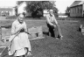

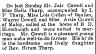
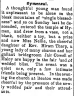
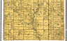
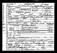
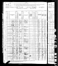
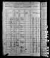
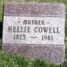
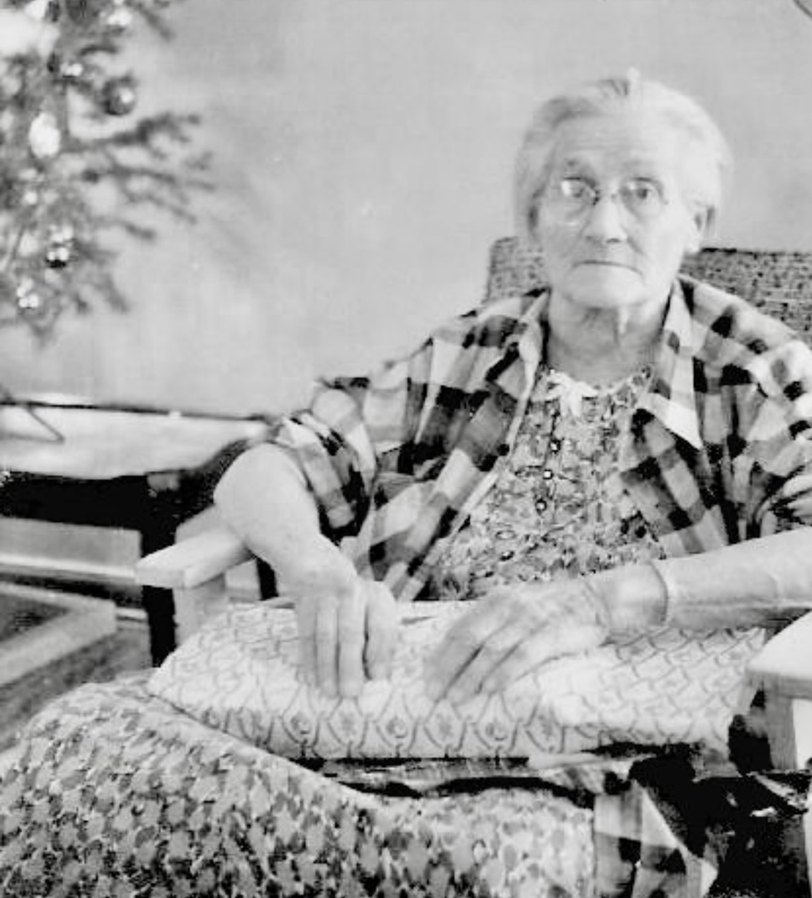
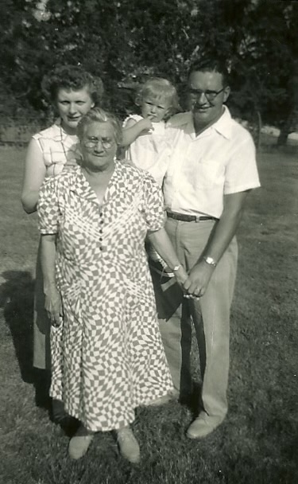
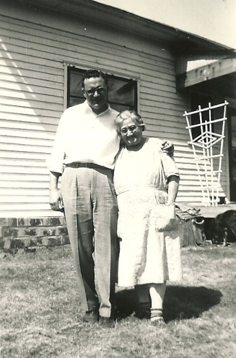
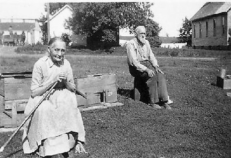

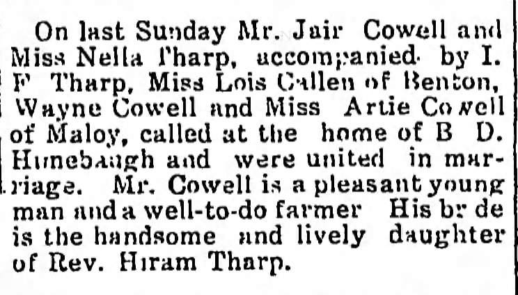
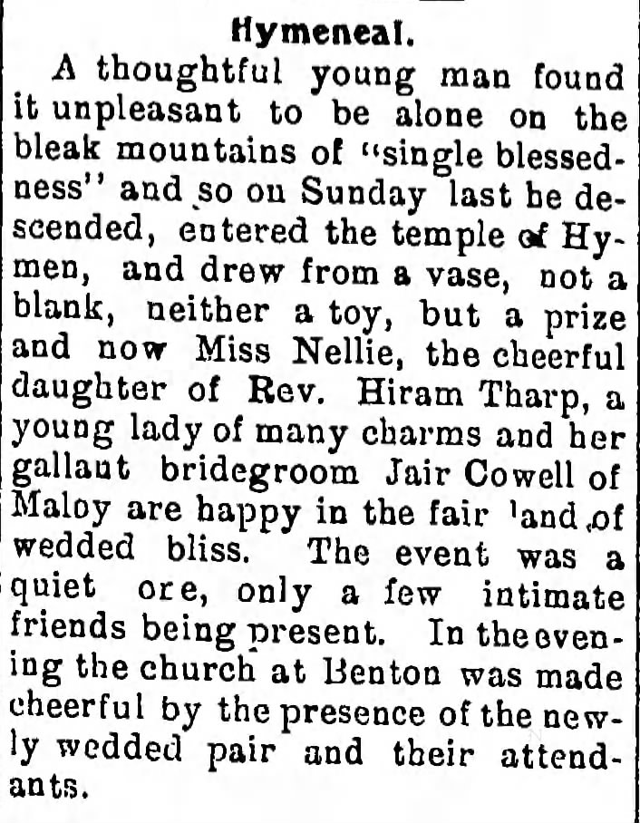
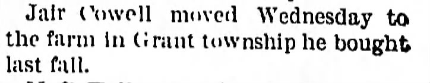
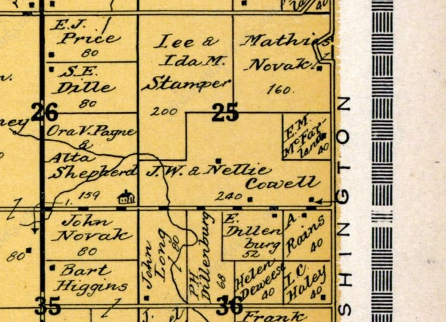
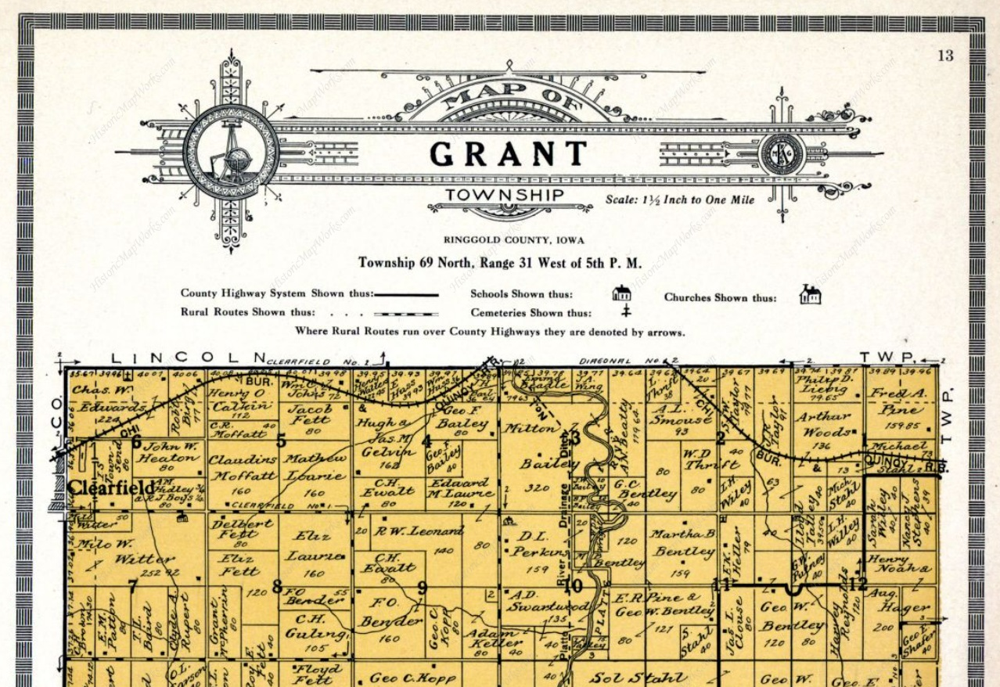
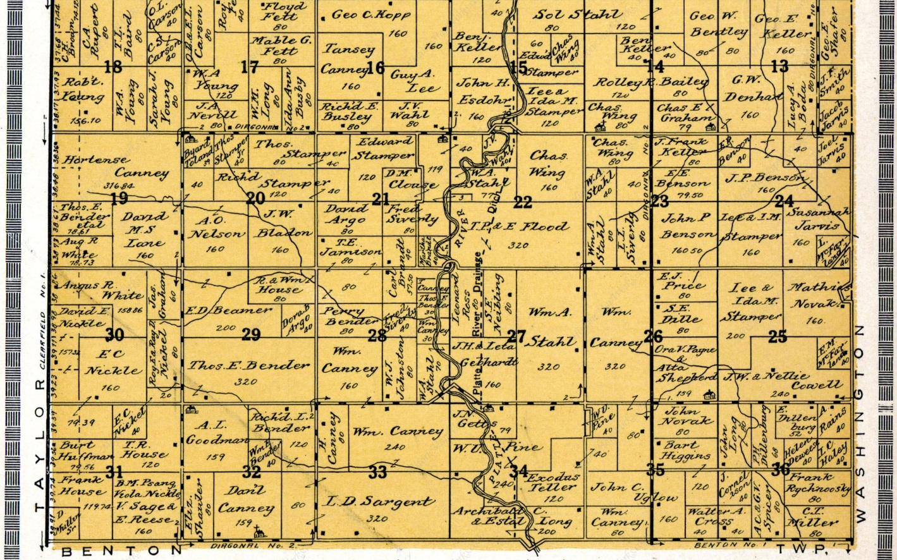
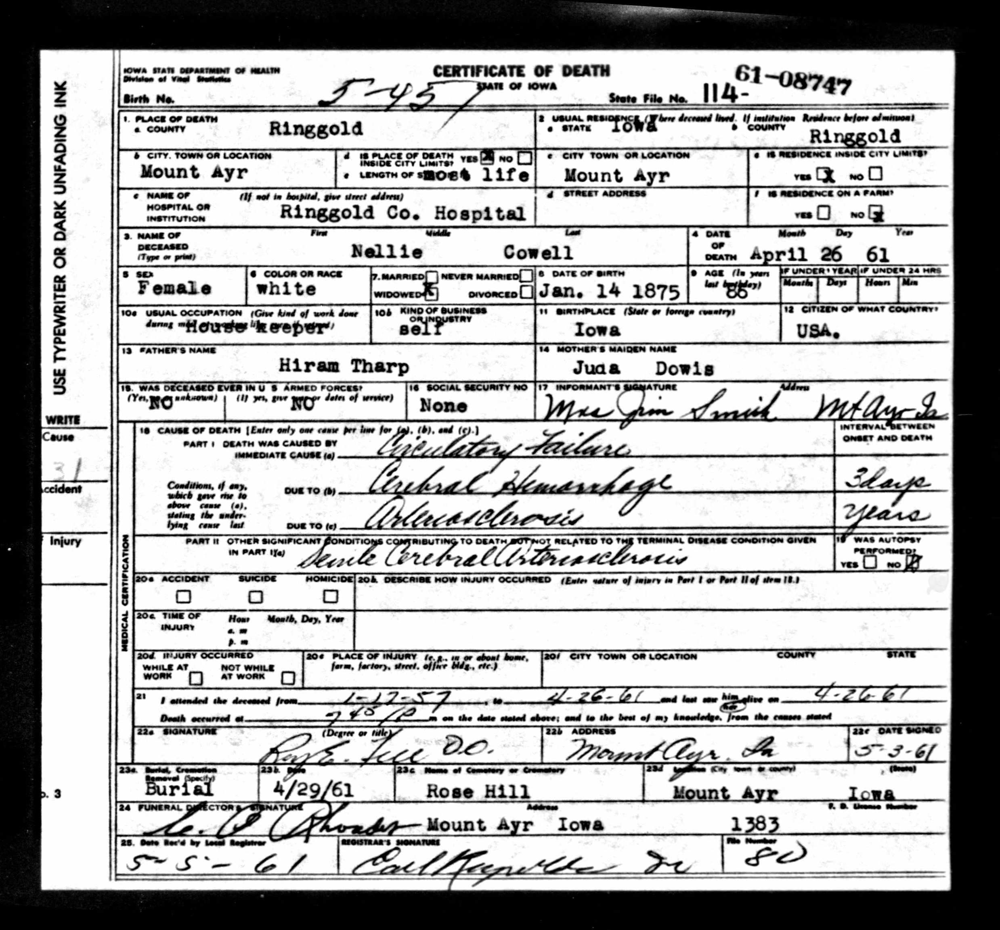
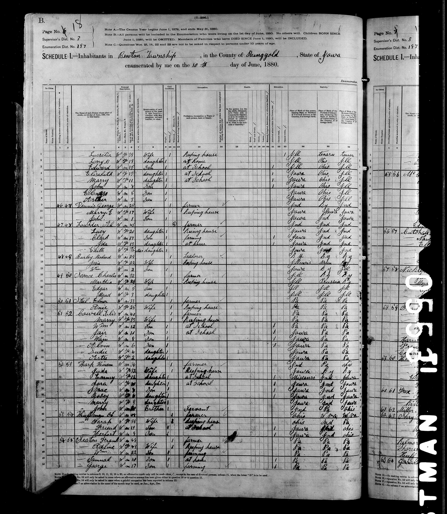
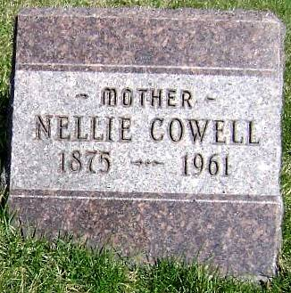
Family Map
Pedigree
-
Tharp, Hiram
-
Dowis, Juda
- Tharp, Rose "Nellie" N
-
Dowis, Juda
Ancestors
Source References
-
Iowa Death Records
-
- Page: State Historical Society of Iowa; Des Moines, IA, USA; Iowa Death Records, 1952-1967; Reference: 18-0688_us-Ia Year: 1961
-
Citation:
Source Citation
State Historical Society of Iowa; Des Moines, IA, USA; Iowa Death Records, 1952-1967; Reference: 18-0688_us-IaDescription
Year: 1961Source Information
Ancestry.com. Iowa, U.S., Death Records, 1880-1968 [database on-line]. Lehi, UT, USA: Ancestry.com Operations, Inc., 2017.
Original data:Iowa Deaths, 1880-1904. State Historical Society of Iowa, State Archives, Des Moines, Iowa.; Iowa, Deaths, 1920-1951. State Historical Society of Iowa, State Archives, Des Moines, Iowa.Source Description
This database consists of records from two subseries of Iowa Death records from the State Historical Society of Iowa, State Archives, RG 48 Public Health, Vital Statistics.
-
-
Iowa Census
-
- Date: 1880
- Page: Year: 1880; Census Place: Benton, Ringgold, Iowa; Roll: 362; Page: 43b; Enumeration District: 197
-
Citation:
Year: 1880; Census Place: Benton, Ringgold, Iowa; Roll: 362; Page: 43b; Enumeration District: 197
Description
Enumeration District: 197; Description: Burton and Rice TownshipsSource Information
Ancestry.com and The Church of Jesus Christ of Latter-day Saints. 1880 United States Federal Census [database on-line]. Lehi, UT, USA: Ancestry.com Operations Inc, 2010. 1880 U.S. Census Index provided by The Church of Jesus Christ of Latter-day Saints © Copyright 1999 Intellectual Reserve, Inc. All rights reserved. All use is subject to the limited use license and other terms and conditions applicable to this site.
Original data:Tenth Census of the United States, 1880. (NARA microfilm publication T9, 1,454 rolls). Records of the Bureau of the Census, Record Group 29. National Archives, Washington, D.C.
-
-
IowaGravestones.org
-
- Page: https://iowagravestones.org/gs_view.php?id=509873
-
-
Iowa, U.S., Marriage Records
-
- Page: Iowa, U.S., Marriage Records, 1880-1948; Paul Cowell and Vernice Hudson
-
Citation:
Iowa Department of Public Health; Des Moines, Iowa; Iowa Marriage Records, 1923–1937; Record Type: Marriage
Description
Volume: 5Source Information
Ancestry.com. Iowa, U.S., Marriage Records, 1880-1948 [database on-line]. Lehi, UT, USA: Ancestry.com Operations, Inc., 2014.
Original data:Iowa Department of Public Health. Iowa Marriage Records, 1880–1948. Textual Records. State Historical Society of Iowa, Des Moines, Iowa. Iowa Department of Public Health. Iowa Marriage Records, 1923–37. Microfilm. Record Group 048. State Historical Society of Iowa, Des Moines, Iowa.
-
-
Twice-a-Week News (Mount Ayr, Iowa)
-
- Date: 3/7/1899
- Page: Page 1
-